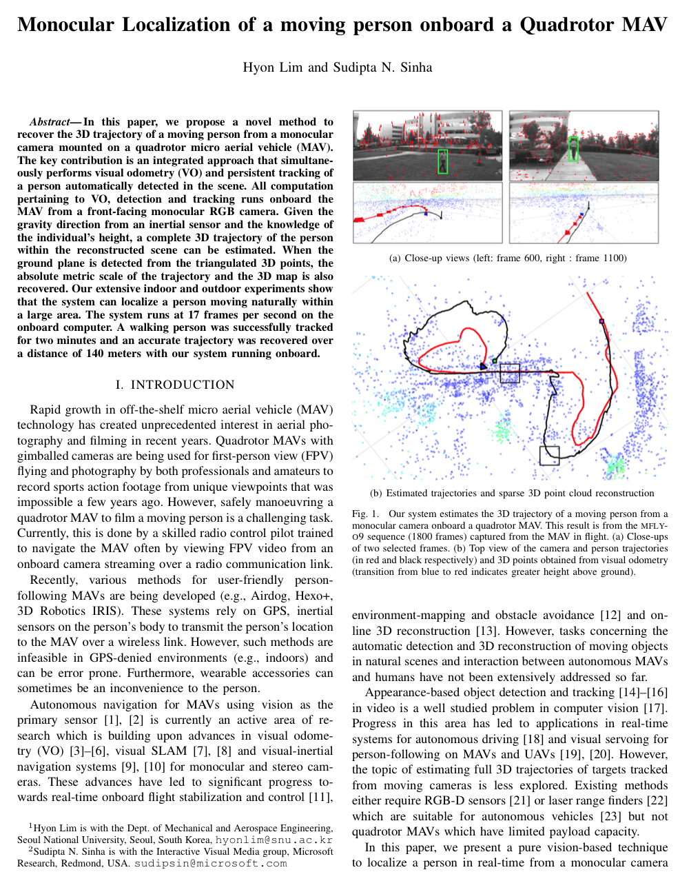

Monocular Localization of a moving person onboard a Quadrotor MAV1Seoul National University, South Korea 2Microsoft Research Redmond, USA ICRA 2015 |
|
| Abstract In this paper, we propose a novel method to recover the 3D trajectory of a moving person from a monocular camera mounted on a quadrotor micro aerial vehicle (MAV). The key contribution is an integrated approach that simultaneously performs visual odometry (VO) and persistent tracking of a person automatically detected in the scene. All computation pertaining to VO, detection and tracking runs onboard the MAV from a front-facing monocular RGB camera. Given the gravity direction from an inertial sensor and the knowledge of the individual's height, a complete 3D trajectory of the person within the reconstructed scene can be estimated. When the ground plane is detected from the triangulated 3D points, the absolute metric scale of the trajectory and the 3D map is also recovered. Our extensive indoor and outdoor experiments show that the system can localize a person moving naturally within a large area. The system runs at 17 frames per second on the onboard computer. A walking person was successfully tracked for two minutes and an accurate trajectory was recovered over a distance of 140 meters with our system running onboard. |  |
|
Dataset download About the dataset This dataset contains image sequences, AHRS data, ground truth bounding box annotations (GTBB) of a person observed from the camera onboard the MAV. We provide the following sequences used in the evaluation reported in the paper. mfly-o6 [download] mfly-o7 [download] mfly-o8 [download] mfly-o9 [download] walk-i4 [download] walk-i5 [download] walk-o1 [download] walk-o2 [download] walk-o3 [download] File format Each directory contains the following files. gtbb.txt imu.txt [frame_number].png Ground truth bounding box annotations Each line of the gtbb.txt file stores the 2d bounding box position -- [left, top, width, height] for each frame. Here is an example. 252,203,56,137 This indicates that the top-left corner of the bounding box is at pixel (252,203) and the width and height of the bounding box is 56 and 137 pixels respectively. The line number indicates the frame number. IMU information Each line of the imu.txt file contains the following information. [frame number] , [time of frame captured / millisecond] , [time of IMU captured / millisecond], [roll / degree], [pitch / degree], [yaw / degree] The frame number is directly associated in one-to-one fashion with the image files. |
|